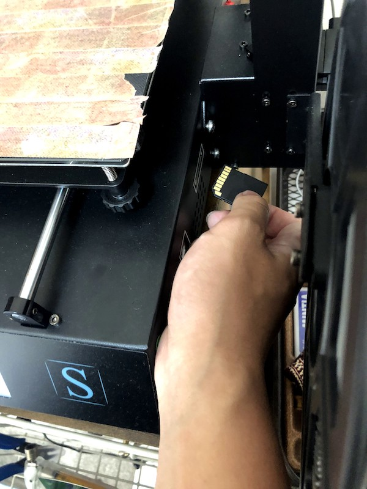

anycubic mega 使用方法
fablabひらつかでも稼働しているanycubic mega sという3Dプリンターの使い方について説明します。（大学で使用する場合）
1.ファイル→エクスポートを選択。

2.ファイル名をつけます。

3.タイプをSTLファイルに変換し、保存先を選択したのちにエクスポートを押します。
！！保存先は自分のUSBメモリにしとくと楽！！
（自宅で使用する際は自分のパソコンに保存）

4.プリンターに刺さっているsdカードを引っこ抜いてfablab（もしくは自分の）のパソコンに挿します。
5.curaというスライサーアプリを開きます。(fablabひらつかのpcにインストールされています。)

6.左上のファイルのアイコンをクリックし、先ほど保存したSTLファイルを選択します。

7.右下のスライスをクリック。
fablabのpcであれば基本的なことは設定されているので、settingはいじる必要ないです。どうしてもいじりたい方は こちら を参照してください。

8.Save to fileを選択

9.ファイル名を英語に変更し、ファイル形式をG-codeに変更します。

10.Where（保存先）をNO NAME(sdカード)に設定します。